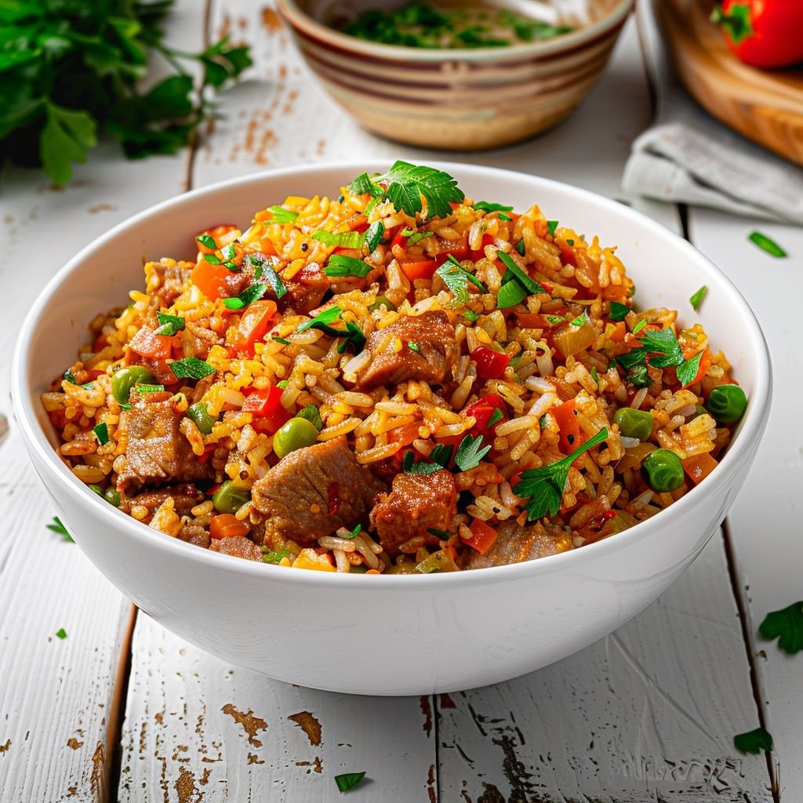

Arroz com Pequi
Prato típico do Centro-Oeste, feito com arroz e o fruto regional pequi, que dá sabor e aroma marcantes à receita.

Ingredientes
Serve 4 a 5 porções
- 2 xícaras de arroz
- 1 xícara de pequi descascado
- 3 colheres de sopa de óleo ou azeite
- 1 cebola picada
- 2 dentes de alho picados
- 4 xícaras de água
- Sal a gosto
Modo de Preparo
- Aqueça o óleo em uma panela e refogue a cebola e o alho.
- Adicione o arroz e o pequi, refogando por alguns minutos.
- Acrescente a água e o sal. Cozinhe em fogo baixo até o arroz ficar macio e a água secar.
- Sirva quente, tradicionalmente acompanhado de carne ou frango.
Dica do Chef: O pequi tem sabor forte e marcante, então ajuste a quantidade ao seu gosto. Use arroz branco soltinho para melhor textura.